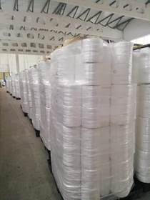
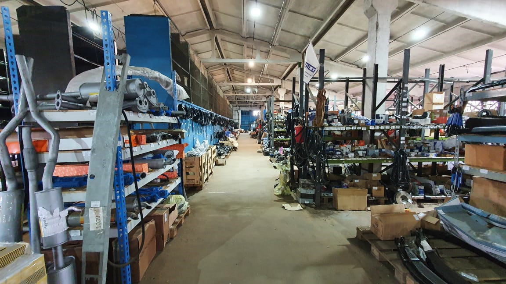
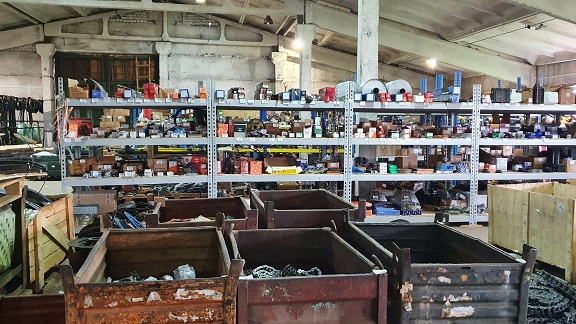

ВНИМАНИЕ!!! АКЦИЯ!
Готовь сани летом, а ШПАГАТ ЗАКУПАЙ ЗИМОЙ
Шпагат полипропиленовый г.Уварово ТЕКС-2200 по цене 198 рублей за кг ГОСТ 17308-88 (высший сорт)
Шпагат ТЕКС 2200 производится из первичного полипропилена высшего качества на собственном современном оборудовании. Шпагат предназначен для связывания тюков сена с использованием пресс-подборщиков, как отечественного, так и импортного производства. Шпагат поставляется в бобинах с крестовой намоткой. В 1 кг - 450 метров. В бобине 2250 метров.
Шпагат полиолефиновый 5кг. 3000м. г. Каменск КВ оптим 600 по цене 1450 рублей за бобину ГОСТ 17308-88 (высший сорт)
Шпагат КВ Оптим 600 - изготовлен из высококачественного полипропилена. Предназначен для автоматической обвязки тюков или рулонов при прессовании сена или соломы на пресс-подборщиках в сельском хозяйстве. Бобина шпагата весом 5 кг. Позволяет упаковать до 80 рулонов сена массой рулона до 300 кг. В 1 кг - 600 метров. В бобине 3000 метров. Отличительные особенности нового шпагата КВ ОПТИМ 600 для сенопрессования:
- Высокая прочность нити на разрыв
- Экономичность
- Гарантированный вес и длина в каждой упаковке
- Использование в сельском хозяйстве шпагата КВ ОПТИМ 600 более выгодно, чем 2000 и 2200 текс, так как удельный расход новой нити на упаковку сена(соломы) снизится в 1,2 раза
Посетите сайт производителя, чтобы увидеть подробные характеристики и описание данного шпагата. Особенно обратите внимание на цену.
А так же 13500 наименований товаров в наличие на наших складах!
Уже на протяжении более чем 30 лет ключевым направлением работы компании остается поставка запасных частей и комплектующих для сельскохозяйственной техники, в число которых входят:
- Запчасти для ГАЗ, УАЗ, МТЗ, ЮМЗ, ДТ-75, Т-150,Т-25,Т-40
- Запчасти к сельхозмашинам и животноводческому оборудованию
- Автомобильные и сельскохозяйственные шины
- Аккумуляторы
- Ремни вентиляторные и приводные
- Подшипники к автомобильной и сельскохозяйственной технике
- Сальники и манжеты
- Электроды и метизы
- Масла, смазки, технические жидкости
- Инструмент
- Фильтра и фильтрующие элементы
- Авто-тракторное электрооборудование
- И многое другое...
Подробнее в нашем прайс-листе.
При покупке товаров на сумму более 100000 рублей - скидка 3 %
При покупке товаров на сумму более 150000 рублей - скидка 4 %
При покупке товаров на сумму более 200000 рублей - скидка 5 %
 